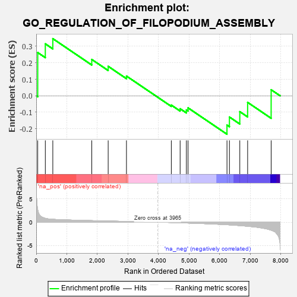
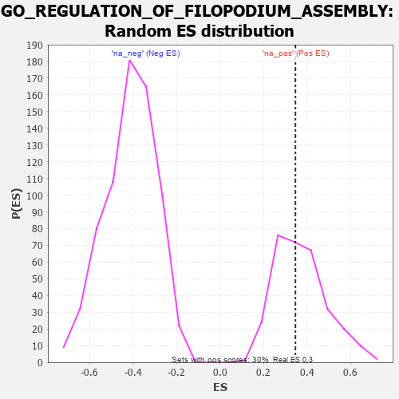

| | | Dataset | 7d |
| Phenotype | NoPhenotypeAvailable |
| Upregulated in class | na_pos |
| GeneSet | GO_REGULATION_OF_FILOPODIUM_ASSEMBLY |
| Enrichment Score (ES) | 0.34656838 |
| Normalized Enrichment Score (NES) | 0.9414404 |
| Nominal p-value | 0.5230263 |
| FDR q-value | 0.7867021 |
| FWER p-Value | 1.0 |
Table: GSEA Results Summary

Fig 1: Enrichment plot: GO_REGULATION_OF_FILOPODIUM_ASSEMBLY
Profile of the Running ES Score & Positions of GeneSet Members on the Rank Ordered List
| PROBE | GENE SYMBOL | GENE_TITLE | RANK IN GENE LIST | RANK METRIC SCORE | RUNNING ES | CORE ENRICHMENT | | 1 | TGFB3 | | | 49 | 2.654 | 0.2622 | Yes |
| 2 | FSCN1 | | | 297 | 0.830 | 0.3151 | Yes |
| 3 | SRF | | | 542 | 0.615 | 0.3466 | Yes |
| 4 | FMR1 | | | 1816 | 0.334 | 0.2204 | No |
| 5 | BCAS3 | | | 2352 | 0.253 | 0.1787 | No |
| 6 | RAB17 | | | 2950 | 0.157 | 0.1196 | No |
| 7 | RALA | | | 4416 | -0.079 | -0.0565 | No |
| 8 | ARF6 | | | 4704 | -0.140 | -0.0784 | No |
| 9 | CAPZB | | | 4908 | -0.179 | -0.0858 | No |
| 10 | ARAP1 | | | 4963 | -0.191 | -0.0733 | No |
| 11 | CDC42 | | | 6236 | -0.548 | -0.1777 | No |
| 12 | MIEN1 | | | 6316 | -0.582 | -0.1288 | No |
| 13 | RAB5A | | | 6655 | -0.741 | -0.0963 | No |
| 14 | ESPN | | | 6911 | -0.873 | -0.0400 | No |
| 15 | TRPM2 | | | 7680 | -1.712 | 0.0366 | No |
Table: GSEA details [plain text format]

Fig 2: GO_REGULATION_OF_FILOPODIUM_ASSEMBLY: Random ES distribution
Gene set null distribution of ES for GO_REGULATION_OF_FILOPODIUM_ASSEMBLY